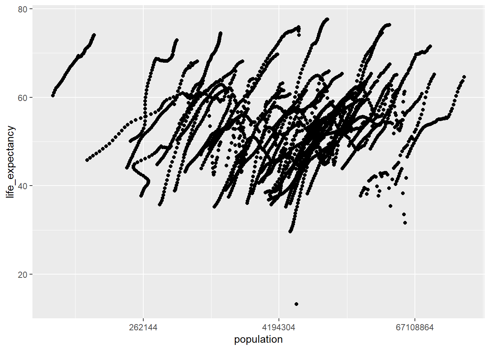
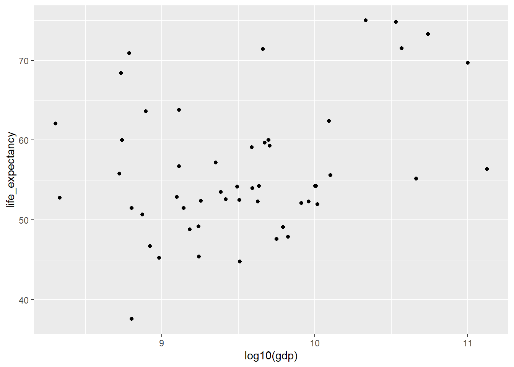
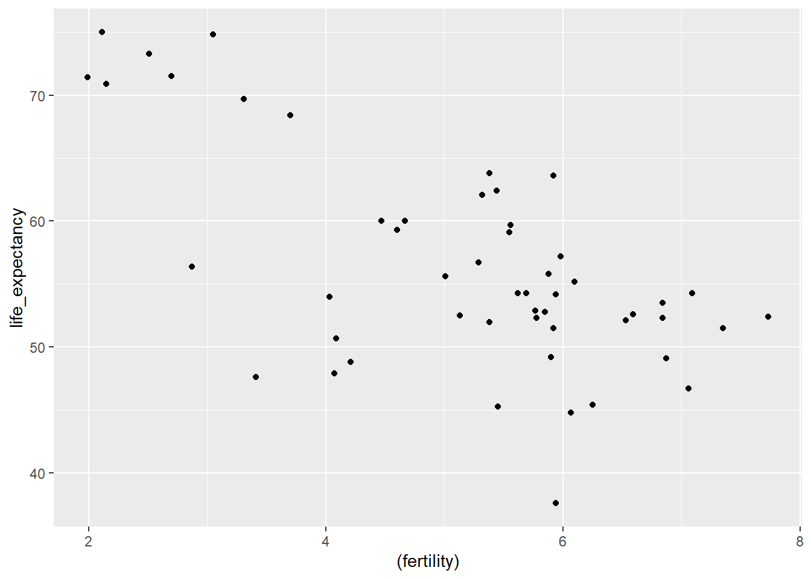

R coding Exercise
#load dslabs and tidyverse package
library("dslabs")
library("tidyverse")## -- Attaching packages --------------------------------------- tidyverse 1.3.1 --## v ggplot2 3.3.5 v purrr 0.3.4
## v tibble 3.1.5 v dplyr 1.0.7
## v tidyr 1.1.4 v stringr 1.4.0
## v readr 2.0.2 v forcats 0.5.1## -- Conflicts ------------------------------------------ tidyverse_conflicts() --
## x dplyr::filter() masks stats::filter()
## x dplyr::lag() masks stats::lag()#look at help file for gapminder data
help(gapminder)## starting httpd help server ...## done#get an overview of data structure
str(gapminder)## 'data.frame': 10545 obs. of 9 variables:
## $ country : Factor w/ 185 levels "Albania","Algeria",..: 1 2 3 4 5 6 7 8 9 10 ...
## $ year : int 1960 1960 1960 1960 1960 1960 1960 1960 1960 1960 ...
## $ infant_mortality: num 115.4 148.2 208 NA 59.9 ...
## $ life_expectancy : num 62.9 47.5 36 63 65.4 ...
## $ fertility : num 6.19 7.65 7.32 4.43 3.11 4.55 4.82 3.45 2.7 5.57 ...
## $ population : num 1636054 11124892 5270844 54681 20619075 ...
## $ gdp : num NA 1.38e+10 NA NA 1.08e+11 ...
## $ continent : Factor w/ 5 levels "Africa","Americas",..: 4 1 1 2 2 3 2 5 4 3 ...
## $ region : Factor w/ 22 levels "Australia and New Zealand",..: 19 11 10 2 15 21 2 1 22 21 ...#get a summary of data
summary(gapminder)## country year infant_mortality life_expectancy
## Albania : 57 Min. :1960 Min. : 1.50 Min. :13.20
## Algeria : 57 1st Qu.:1974 1st Qu.: 16.00 1st Qu.:57.50
## Angola : 57 Median :1988 Median : 41.50 Median :67.54
## Antigua and Barbuda: 57 Mean :1988 Mean : 55.31 Mean :64.81
## Argentina : 57 3rd Qu.:2002 3rd Qu.: 85.10 3rd Qu.:73.00
## Armenia : 57 Max. :2016 Max. :276.90 Max. :83.90
## (Other) :10203 NA's :1453
## fertility population gdp continent
## Min. :0.840 Min. :3.124e+04 Min. :4.040e+07 Africa :2907
## 1st Qu.:2.200 1st Qu.:1.333e+06 1st Qu.:1.846e+09 Americas:2052
## Median :3.750 Median :5.009e+06 Median :7.794e+09 Asia :2679
## Mean :4.084 Mean :2.701e+07 Mean :1.480e+11 Europe :2223
## 3rd Qu.:6.000 3rd Qu.:1.523e+07 3rd Qu.:5.540e+10 Oceania : 684
## Max. :9.220 Max. :1.376e+09 Max. :1.174e+13
## NA's :187 NA's :185 NA's :2972
## region
## Western Asia :1026
## Eastern Africa : 912
## Western Africa : 912
## Caribbean : 741
## South America : 684
## Southern Europe: 684
## (Other) :5586#determine the type of object gapminder is
class(gapminder)## [1] "data.frame"#This is filtering the data set into only those who are on the continent of Africa
africadata <- gapminder %>% dplyr::filter(continent == "Africa")
#We are looking at our new object's data structure
str(africadata)## 'data.frame': 2907 obs. of 9 variables:
## $ country : Factor w/ 185 levels "Albania","Algeria",..: 2 3 18 22 26 27 29 31 32 33 ...
## $ year : int 1960 1960 1960 1960 1960 1960 1960 1960 1960 1960 ...
## $ infant_mortality: num 148 208 187 116 161 ...
## $ life_expectancy : num 47.5 36 38.3 50.3 35.2 ...
## $ fertility : num 7.65 7.32 6.28 6.62 6.29 6.95 5.65 6.89 5.84 6.25 ...
## $ population : num 11124892 5270844 2431620 524029 4829291 ...
## $ gdp : num 1.38e+10 NA 6.22e+08 1.24e+08 5.97e+08 ...
## $ continent : Factor w/ 5 levels "Africa","Americas",..: 1 1 1 1 1 1 1 1 1 1 ...
## $ region : Factor w/ 22 levels "Australia and New Zealand",..: 11 10 20 17 20 5 10 20 10 10 ...#This is looking at a summary of the data for africadata
summary(africadata)## country year infant_mortality life_expectancy
## Algeria : 57 Min. :1960 Min. : 11.40 Min. :13.20
## Angola : 57 1st Qu.:1974 1st Qu.: 62.20 1st Qu.:48.23
## Benin : 57 Median :1988 Median : 93.40 Median :53.98
## Botswana : 57 Mean :1988 Mean : 95.12 Mean :54.38
## Burkina Faso: 57 3rd Qu.:2002 3rd Qu.:124.70 3rd Qu.:60.10
## Burundi : 57 Max. :2016 Max. :237.40 Max. :77.60
## (Other) :2565 NA's :226
## fertility population gdp continent
## Min. :1.500 Min. : 41538 Min. :4.659e+07 Africa :2907
## 1st Qu.:5.160 1st Qu.: 1605232 1st Qu.:8.373e+08 Americas: 0
## Median :6.160 Median : 5570982 Median :2.448e+09 Asia : 0
## Mean :5.851 Mean : 12235961 Mean :9.346e+09 Europe : 0
## 3rd Qu.:6.860 3rd Qu.: 13888152 3rd Qu.:6.552e+09 Oceania : 0
## Max. :8.450 Max. :182201962 Max. :1.935e+11
## NA's :51 NA's :51 NA's :637
## region
## Eastern Africa :912
## Western Africa :912
## Middle Africa :456
## Northern Africa :342
## Southern Africa :285
## Australia and New Zealand: 0
## (Other) : 0#This is making subsets of our africadata to only have two variables for each
#infmort only includes infant mortality and life_expectancy from africadata
infmort <- africadata %>% dplyr::select(infant_mortality, life_expectancy)
#pop only includes population size and life_expectancy from africadata
pop <- africadata %>% dplyr::select(population, life_expectancy)
#We are looking at the data and data structure within both of our new object infmort
#infmort contains the 2907 observations it needs
str(infmort)## 'data.frame': 2907 obs. of 2 variables:
## $ infant_mortality: num 148 208 187 116 161 ...
## $ life_expectancy : num 47.5 36 38.3 50.3 35.2 ...summary(infmort)## infant_mortality life_expectancy
## Min. : 11.40 Min. :13.20
## 1st Qu.: 62.20 1st Qu.:48.23
## Median : 93.40 Median :53.98
## Mean : 95.12 Mean :54.38
## 3rd Qu.:124.70 3rd Qu.:60.10
## Max. :237.40 Max. :77.60
## NA's :226#We are looking at the data and data structure within both of our new object pop
#pop contains 2907 observations
str(pop)## 'data.frame': 2907 obs. of 2 variables:
## $ population : num 11124892 5270844 2431620 524029 4829291 ...
## $ life_expectancy: num 47.5 36 38.3 50.3 35.2 ...summary(pop)## population life_expectancy
## Min. : 41538 Min. :13.20
## 1st Qu.: 1605232 1st Qu.:48.23
## Median : 5570982 Median :53.98
## Mean : 12235961 Mean :54.38
## 3rd Qu.: 13888152 3rd Qu.:60.10
## Max. :182201962 Max. :77.60
## NA's :51From the scatter plots, the trend of streaks we are seeing is due to multiple observations from one country by year
#Scatter plot made using ggplot showing the relationship between infant mortality and life expectancy
ggplot(infmort, aes(x=infant_mortality, y=life_expectancy)) + geom_point()## Warning: Removed 226 rows containing missing values (geom_point).
#Scatter plot was made by using ggplot showing the relationship between population size and life expectancy with a log scale for population
ggplot(pop, aes(x=population, y=life_expectancy)) + geom_point() + scale_x_continuous(trans = "log2")## Warning: Removed 51 rows containing missing values (geom_point).
Based on looking at the data structure, there are 51 observations with 9 variables
#Filtering to see which years the NA data are and to see there is no NA's for the year 2000
africadata %>% dplyr::filter(is.na(infant_mortality)) %>% dplyr::select(year) %>% count(year)## year n
## 1 1960 10
## 2 1961 17
## 3 1962 16
## 4 1963 16
## 5 1964 15
## 6 1965 14
## 7 1966 13
## 8 1967 11
## 9 1968 11
## 10 1969 7
## 11 1970 5
## 12 1971 6
## 13 1972 6
## 14 1973 6
## 15 1974 5
## 16 1975 5
## 17 1976 3
## 18 1977 3
## 19 1978 2
## 20 1979 2
## 21 1980 1
## 22 1981 1
## 23 2016 51#Based on the above code, we are filtering africadata to only looking at year 2000 since there is no NA's present
africadata_2000 <- africadata %>% dplyr::filter(year == 2000)
#Looking at the data structure of africadata_2000
str(africadata_2000)## 'data.frame': 51 obs. of 9 variables:
## $ country : Factor w/ 185 levels "Albania","Algeria",..: 2 3 18 22 26 27 29 31 32 33 ...
## $ year : int 2000 2000 2000 2000 2000 2000 2000 2000 2000 2000 ...
## $ infant_mortality: num 33.9 128.3 89.3 52.4 96.2 ...
## $ life_expectancy : num 73.3 52.3 57.2 47.6 52.6 46.7 54.3 68.4 45.3 51.5 ...
## $ fertility : num 2.51 6.84 5.98 3.41 6.59 7.06 5.62 3.7 5.45 7.35 ...
## $ population : num 31183658 15058638 6949366 1736579 11607944 ...
## $ gdp : num 5.48e+10 9.13e+09 2.25e+09 5.63e+09 2.61e+09 ...
## $ continent : Factor w/ 5 levels "Africa","Americas",..: 1 1 1 1 1 1 1 1 1 1 ...
## $ region : Factor w/ 22 levels "Australia and New Zealand",..: 11 10 20 17 20 5 10 20 10 10 ...#Looking at a summary of the data of africadata_2000
summary(africadata_2000)## country year infant_mortality life_expectancy
## Algeria : 1 Min. :2000 Min. : 12.30 Min. :37.60
## Angola : 1 1st Qu.:2000 1st Qu.: 60.80 1st Qu.:51.75
## Benin : 1 Median :2000 Median : 80.30 Median :54.30
## Botswana : 1 Mean :2000 Mean : 78.93 Mean :56.36
## Burkina Faso: 1 3rd Qu.:2000 3rd Qu.:103.30 3rd Qu.:60.00
## Burundi : 1 Max. :2000 Max. :143.30 Max. :75.00
## (Other) :45
## fertility population gdp continent
## Min. :1.990 Min. : 81154 Min. :2.019e+08 Africa :51
## 1st Qu.:4.150 1st Qu.: 2304687 1st Qu.:1.274e+09 Americas: 0
## Median :5.550 Median : 8799165 Median :3.238e+09 Asia : 0
## Mean :5.156 Mean : 15659800 Mean :1.155e+10 Europe : 0
## 3rd Qu.:5.960 3rd Qu.: 17391242 3rd Qu.:8.654e+09 Oceania : 0
## Max. :7.730 Max. :122876723 Max. :1.329e+11
##
## region
## Eastern Africa :16
## Western Africa :16
## Middle Africa : 8
## Northern Africa : 6
## Southern Africa : 5
## Australia and New Zealand: 0
## (Other) : 0According to the scatter plots, infant mortality and life expectancy has a negative correlation while population size and life expectancy has no correlation that we can see.
#Scatter plot for infant mortality and life expectancy based only in the year 2000
ggplot(africadata_2000, aes(x=infant_mortality, y=life_expectancy)) + geom_point()
#Scatter plot for population size and life expectancy based only in the year 2000 with a log scale for population
ggplot(africadata_2000, aes(x=population, y=life_expectancy)) + geom_point() + scale_x_continuous(trans = "log2")
Below I will fit two linear models.
#A linear model for the africadata_2000 where infant mortality is predicting life expectancy
fit1 = lm(life_expectancy~infant_mortality, data=africadata_2000)
#A linear model for the africadata_2000 where population size is predicting life expectancy
fit2 = lm(life_expectancy~population, data=africadata_2000)
#A summary table displaying information about the linear model between life expectancy and infant mortality
summary(fit1)##
## Call:
## lm(formula = life_expectancy ~ infant_mortality, data = africadata_2000)
##
## Residuals:
## Min 1Q Median 3Q Max
## -22.6651 -3.7087 0.9914 4.0408 8.6817
##
## Coefficients:
## Estimate Std. Error t value Pr(>|t|)
## (Intercept) 71.29331 2.42611 29.386 < 2e-16 ***
## infant_mortality -0.18916 0.02869 -6.594 2.83e-08 ***
## ---
## Signif. codes: 0 '***' 0.001 '**' 0.01 '*' 0.05 '.' 0.1 ' ' 1
##
## Residual standard error: 6.221 on 49 degrees of freedom
## Multiple R-squared: 0.4701, Adjusted R-squared: 0.4593
## F-statistic: 43.48 on 1 and 49 DF, p-value: 2.826e-08#A summary table displaying information about the linear model between life expectancy and population size
summary(fit2)##
## Call:
## lm(formula = life_expectancy ~ population, data = africadata_2000)
##
## Residuals:
## Min 1Q Median 3Q Max
## -18.429 -4.602 -2.568 3.800 18.802
##
## Coefficients:
## Estimate Std. Error t value Pr(>|t|)
## (Intercept) 5.593e+01 1.468e+00 38.097 <2e-16 ***
## population 2.756e-08 5.459e-08 0.505 0.616
## ---
## Signif. codes: 0 '***' 0.001 '**' 0.01 '*' 0.05 '.' 0.1 ' ' 1
##
## Residual standard error: 8.524 on 49 degrees of freedom
## Multiple R-squared: 0.005176, Adjusted R-squared: -0.01513
## F-statistic: 0.2549 on 1 and 49 DF, p-value: 0.6159From fit1, we can see that similar to the scatter plot, there is a negative correlation between life expectancy and infant mortality based on the negative estimate for infant_mortality. This estimate is also significant based on the p-value of 2.83e-08 because it is below the common threshold of a p-value of 0.05. This means infant mortality is a significant predictor for life expectancy. For every one unit increase in infant mortality, the life expectancy will decrease 0.189 years.
From fit2, we can see based on the p-value of 0.616, compared to 0.05, that there is no significant linear relationship between the population size and life expectancy. We can see this also based on the estimate for population. It is a value very close to 0.
#Additional analysis - Carter Coleman, Group 2
#To further explore what factors affect life expectancy across African countries in the year 2,000, create a new data set from “africadata_2000” that contains “country”, “life expectancy” and “gdp”.
africadata_2000_life_gdp <- africadata_2000 %>%
select("country", "life_expectancy", "gdp")#Repeat the last step, except with “Country”, “life expectancy”, and “Fertility”.
africadata_2000_life_fert <- africadata_2000 %>%
select("country", "life_expectancy", "fertility")#Create a plot of life expectancy as the output and country’s gdp as the input. Note that whe applied a log(10)scale to gdp to clean up the X-axis a little bit.
ggplot(data = africadata_2000_life_gdp) +
geom_point(mapping = aes(log10(gdp), life_expectancy))
#Repeat the last step with life expectancy and fertility. Do not apply the log(10) scale to fertility
ggplot(data = africadata_2000_life_fert) +
geom_point(mapping = aes((fertility), life_expectancy))
#Now that we have some plots, we can see some loose trends: as gdp increses, life expectancy increases (positive relationship); As fertility increases, life expectancy decreases. Since these seem to be some interesting results considering how resource availability affects a country’s average life expectancy, fit a linear model to the data sets.
#gdp and life expectancy:
fit_gdp_life <- lm(life_expectancy~gdp, data = africadata_2000_life_gdp)
summary(fit_gdp_life)##
## Call:
## lm(formula = life_expectancy ~ gdp, data = africadata_2000_life_gdp)
##
## Residuals:
## Min 1Q Median 3Q Max
## -17.488 -4.316 -1.890 4.272 17.479
##
## Coefficients:
## Estimate Std. Error t value Pr(>|t|)
## (Intercept) 5.501e+01 1.247e+00 44.106 <2e-16 ***
## gdp 1.168e-10 4.640e-11 2.516 0.0152 *
## ---
## Signif. codes: 0 '***' 0.001 '**' 0.01 '*' 0.05 '.' 0.1 ' ' 1
##
## Residual standard error: 8.043 on 49 degrees of freedom
## Multiple R-squared: 0.1144, Adjusted R-squared: 0.09632
## F-statistic: 6.329 on 1 and 49 DF, p-value: 0.0152#What we see is that the p-value for the relationship between life expectancy and gdp is <0.05 (p-value = 0.0152) indicating that the relationship is significant. Additionally, the slope (slope = 1.168e-10) of the linear fit shows a positive correltion. However, an R^2 value of 0.096 shows that the linear model does not explain that much of the data. This means while a significant relationship exists between gdp and life expectancy, prediction outside the data set is limited.
#fertility and life expectancy:
fit_fert_life <- lm(life_expectancy~fertility, data = africadata_2000_life_fert)
summary(fit_fert_life)##
## Call:
## lm(formula = life_expectancy ~ fertility, data = africadata_2000_life_fert)
##
## Residuals:
## Min 1Q Median 3Q Max
## -15.7657 -2.9452 0.9899 4.5624 10.3854
##
## Coefficients:
## Estimate Std. Error t value Pr(>|t|)
## (Intercept) 76.0751 3.3484 22.720 < 2e-16 ***
## fertility -3.8231 0.6254 -6.113 1.57e-07 ***
## ---
## Signif. codes: 0 '***' 0.001 '**' 0.01 '*' 0.05 '.' 0.1 ' ' 1
##
## Residual standard error: 6.437 on 49 degrees of freedom
## Multiple R-squared: 0.4327, Adjusted R-squared: 0.4211
## F-statistic: 37.37 on 1 and 49 DF, p-value: 1.568e-07#The analysis shows a significant, negative correlation between fertility and life expectancy (p-value = 1.568e-07; slope = -3.8231). In this analysis, R^2 = 0.4211. This means that the linear model explains the data better than that of gdp and life expectancy data. I would argue that because there are so many factors that affect life expectancy, having a R^2 of ~0.4 makes this linear model a decent predictor of the the affect of fertility on life expectancy outside the parameters of this data set.
#Through this exercise, we found three significant relationships that affect life expectancy. Those input variables were infant mortality, fertility, and gdp. Since all those variables do not affect life expectancy in a vacuum, let’s look at the relationship of all three concurrently using a multiple regression analysis.
#Use the africa_2000 data set to create a new data set with the variables: country, life expectancy, infant mortality, gdp, and fertility.
Multi_africa_2000 <- africadata_2000 %>%
select("country", "life_expectancy", "fertility", "gdp", "infant_mortality")#We won’t plot this because there are >3 axies being analysed
#Next, run a multiple regression analysis on the newly created data set with your inputs being: gdp, infant mortality, and fertility; and your output being life expectancy.
Multi_fit <- lm(life_expectancy ~ gdp + fertility + infant_mortality, data=Multi_africa_2000)
summary(Multi_fit)##
## Call:
## lm(formula = life_expectancy ~ gdp + fertility + infant_mortality,
## data = Multi_africa_2000)
##
## Residuals:
## Min 1Q Median 3Q Max
## -19.924 -2.921 1.574 4.240 7.907
##
## Coefficients:
## Estimate Std. Error t value Pr(>|t|)
## (Intercept) 7.329e+01 3.793e+00 19.322 <2e-16 ***
## gdp 2.909e-11 3.941e-11 0.738 0.4641
## fertility -1.423e+00 1.114e+00 -1.278 0.2074
## infant_mortality -1.258e-01 5.048e-02 -2.491 0.0163 *
## ---
## Signif. codes: 0 '***' 0.001 '**' 0.01 '*' 0.05 '.' 0.1 ' ' 1
##
## Residual standard error: 6.157 on 47 degrees of freedom
## Multiple R-squared: 0.5022, Adjusted R-squared: 0.4704
## F-statistic: 15.8 on 3 and 47 DF, p-value: 3.058e-07#The multiple regression indicated that the model explained 0.4704 of the data. Meaning that, with a p-value = 3.058e-7, the combunation of inputs in the model were a significant predictor of life expectancy. Individually, infant mortality contributed significantly to the model (slope = -1.258e-01, p = 0.0163), gdp (slope = 2.909e-11, p = 0.4641) and fertility (slope = -1.423, p = 0.2074) did not.